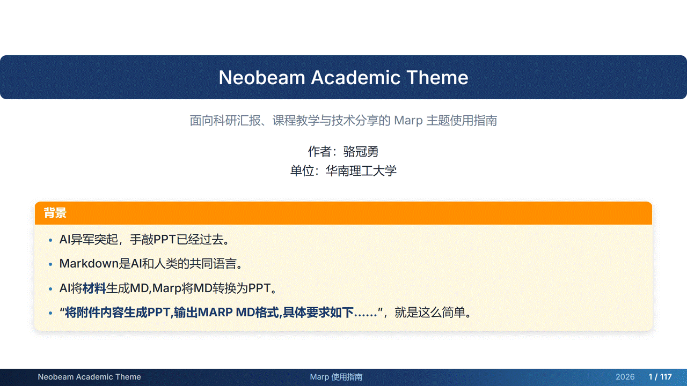

面向科研汇报、课程教学与技术分享的 Marp 主题使用指南
作者：骆冠勇 单位：华南理工大学
Marp 是一个基于 Markdown 的幻灯片制作生态，适合用纯文本方式快速编写、维护和导出演示文稿。
Marp 特别适合结构化、可复用、重视内容维护的演示场景。
Marp 的基本思想是：用 Markdown 写内容，用 CSS 控制样式，用工具导出演示文件。
使用 Markdown 编写内容：
# 标题 - 要点一 - 要点二
通过 Front Matter 指定主题：
--- marp: true theme: neobeam-lgy ---
生成多种格式：
PDF PPTX HTML PNG JPEG
Markdown + CSS Theme + Marp Engine = Slide Deck
一个 Marp 幻灯片文件通常由 Front Matter 和 多页 Markdown 内容 组成。
--- marp: true theme: neobeam-lgy paginate: true math: katex size: 16:9 --- # 第一页标题 第一页内容 --- # 第二页标题 第二页内容
---
theme
paginate
math
size
marp
true
neobeam-lgy
katex
16:9
header
课程名
footer
作者 / 日期
推荐配置：
--- marp: true theme: neobeam-lgy paginate: true math: katex size: 16:9 footer: '<span>作者 / 单位</span><span>报告标题</span><span>日期</span>' ---
推荐使用官方插件 Marp for VS Code，可以实现实时预览和一键导出。
Marp for VS Code
.md
点击右上角：
Open Preview to the Side
即可实时预览幻灯片效果。
--- marp: true theme: neobeam-lgy paginate: true math: katex size: 16:9 ---
marp: true
使用本主题时，需要让 VS Code 知道 neobeam-lgy.css 的位置。
neobeam-lgy.css
Marp Themes
Markdown › Marp: Themes
./neobeam-lgy.css
{ "markdown.marp.themes": [ "./neobeam-lgy.css" ] }
project/ ├── slides.md ├── neobeam-lgy.css └── images/ ├── logo.png └── figure.png
Marp for VS Code 可以直接导出为 PDF、PPTX、HTML、图片等格式。
PDF
PPTX
HTML
打开命令面板：
Ctrl + Shift + P
Cmd + Shift + P
输入并选择：
Marp: Export Slide Deck
PNG/JPEG
Marp CLI 适合批量导出、自动化构建和命令行工作流。
需要先安装 Node.js，然后执行：
npm install -g @marp-team/marp-cli
导出 PDF：
marp slides.md --theme neobeam-lgy.css --pdf
导出 PPTX：
marp slides.md --theme neobeam-lgy.css --pptx
导出 HTML：
marp slides.md --theme neobeam-lgy.css --html
假设项目结构如下：
project/ ├── slides.md ├── neobeam-lgy.css └── images/ └── architecture.png
# 导出 PDF marp slides.md --theme neobeam-lgy.css --pdf # 导出 PPTX marp slides.md --theme neobeam-lgy.css --pptx # 导出 HTML marp slides.md --theme neobeam-lgy.css --html # 导出图片 marp slides.md --theme neobeam-lgy.css --images png
package.json
可以在项目中创建 package.json，统一管理导出命令。
{ "scripts": { "pdf": "marp slides.md --theme neobeam-lgy.css --pdf", "pptx": "marp slides.md --theme neobeam-lgy.css --pptx", "html": "marp slides.md --theme neobeam-lgy.css --html", "all": "npm run pdf && npm run pptx && npm run html" }, "devDependencies": { "@marp-team/marp-cli": "latest" } }
npm install npm run pdf npm run pptx npm run html npm run all
这样可以保证团队成员使用一致的导出命令。
在 Markdown 文件顶部写入：
theme: neobeam-lgy
paginate: true
math: katex
size: 16:9
主题内置支持两种常见比例：
1280px × 720px
4:3
960px × 720px
示例：
--- marp: true theme: neobeam-lgy size: 4:3 ---
普通页面中的一级标题 # 会自动显示为顶部深蓝标题栏。
#
# 普通页面标题 正文内容写在这里。
适合：
正文文字采用清爽的 Inter 字体，并针对中文环境配置了常见中文字体回退。
可以直接使用 Markdown 的基础语法：
inline code
mark
也可以使用：
这是一个 高亮文本 示例。
使用 <!-- _class: title --> 创建封面页
<!-- _class: title -->
报告人：张三 单位：某某大学 / 某某实验室
标题页使用方式：
--- <!-- _class: title --> # 报告标题 > 副标题或一句话摘要  报告人：张三
支持的 logo 写法：


section
章节页写法：
<!-- _class: section theme-indigo --> # 方法设计 ## Methodology and System Design
特点：
可以搭配主题颜色类：
<!-- _class: section theme-cyan --> <!-- _class: section theme-emerald --> <!-- _class: section theme-burgundy -->
欢迎交流与讨论
your.email@example.com
感谢页写法：
<!-- _class: thanks --> # Thanks ## Q & A your.email@example.com
dark
深色页适合展示：
深色页面中的引用、代码、表格都会自动适配暗色背景。
<!-- _class: dark --> # 深色页面 ## 适合强调内容 这里是正文内容。
也可以和主题色组合：
<!-- _class: dark theme-purple --> <!-- _class: dark theme-teal --> <!-- _class: dark theme-default -->
默认排版适合大多数演示场景。
# 默认页面 - 内容一 - 内容二 - 内容三
使用 dense 类降低字号和行距，适合内容稍多的页面。
dense
<!-- _class: dense -->
使用 denser 类展示更多内容。
denser
<!-- _class: denser -->
使用 densest 类时要谨慎，适合参考资料、附录、密集表格或公式推导。
densest
<!-- _class: densest -->
主题会自动美化列表标记颜色。
- 研究背景 - 方法设计 - 实验结果 - 结论展望
效果：
1. 数据预处理 2. 模型训练 3. 指标评估 4. 消融实验
- [x] 完成数据收集 - [x] 完成初步实验 - [ ] 补充消融分析 - [ ] 完成论文写作
> A model is only as good as the assumptions behind it.
A model is only as good as the assumptions behind it.
当引用块中包含四级标题 #### 时，会自动变成带标题的定义块。
####
> #### Definition > > 给定样本空间 $\mathcal{X}$，分类器定义为映射 > $f: \mathcal{X} \rightarrow \mathcal{Y}$。
Definition 给定样本空间 X\mathcal{X}X，分类器定义为映射 f:X→Yf: \mathcal{X} \rightarrow \mathcal{Y}f:X→Y。
给定样本空间 X\mathcal{X}X，分类器定义为映射 f:X→Yf: \mathcal{X} \rightarrow \mathcal{Y}f:X→Y。
多个定义块会自动轮换不同颜色。
Assumption 输入样本独立同分布，且训练集与测试集来自同一数据分布。
输入样本独立同分布，且训练集与测试集来自同一数据分布。
Lemma 若损失函数是凸函数，则任意局部最优解也是全局最优解。
若损失函数是凸函数，则任意局部最优解也是全局最优解。
Warning 实际任务中，数据分布偏移会破坏该假设。
实际任务中，数据分布偏移会破坏该假设。
| Method | Accuracy | F1 | Latency | |---|---:|---:|---:| | Baseline | 89.1 | 87.4 | 42 ms | | Ours-small | 92.3 | 90.8 | 31 ms | | Ours-large | 94.7 | 93.2 | 55 ms |
本主题表格具有：
适合展示：
行内代码示例：
python train.py
learning_rate
softmax()
主题会自动给行内代码添加浅蓝背景和边框。
import numpy as np def softmax(x): x = x - np.max(x) exp_x = np.exp(x) return exp_x / np.sum(exp_x) logits = np.array([1.2, 0.7, 2.4]) print softmax(logits)
代码块会显示为：
 ###### 图 1：系统整体架构示意图
效果示例：
通过图片 alt 文本中的标记控制位置：
#center
#left
#right
#noborder

也可以使用 HTML 容器：
<div class="figure"> <img src="./result.png" alt="result" /> <div class="caption">图 2：实验结果可视化</div> </div>
适合需要稳定图注布局的页面。
行内公式示例：
模型的预测函数可以写为 fθ(x)f_\theta(x)fθ(x)，损失函数为 L(θ)\mathcal{L}(\theta)L(θ)。
Markdown 写法：
模型的预测函数可以写为 $f_\theta(x)$。
$$ \mathcal{L}(\theta) = -\frac{1}{N} \sum_{i=1}^{N} y_i \log f_\theta(x_i) $$
L(θ)=−1N∑i=1Nyilogfθ(xi)\mathcal{L}(\theta) = -\frac{1}{N} \sum_{i=1}^{N} y_i \log f_\theta(x_i) L(θ)=−N1i=1∑Nyilogfθ(xi)
可以使用 .eq-num 手动制作编号公式：
.eq-num
<div class="eq-num"> <div> $$ E = mc^2 $$ </div> <span class="eq-label">(1)</span> </div>
E=mc2E = mc^2 E=mc2
使用 .formula-box 突出核心公式：
.formula-box
<div class="formula-box"> $$ \hat{y} = \arg\max_y p(y \mid x) $$ </div>
y^=argmaxyp(y∣x)\hat{y} = \arg\max_y p(y \mid x) y^=argymaxp(y∣x)
<div class="columns"> <div> ### 左栏 - 背景介绍 - 问题定义 - 研究动机 </div> <div> ### 右栏 - 方法框架 - 实验设计 - 结果分析 </div> </div>
主题提供多种网格比例：
.columns
.columns-7-3
.columns-6-4
.columns-5-5
.columns-4-6
.columns-3-7
这里放置更长的解释、推导或实验结果。左侧占据更大空间，适合展示正文、表格或公式。
<div class="columns-3"> <div>第一栏</div> <div>第二栏</div> <div>第三栏</div> </div>
原始数据、文本或图像。
特征提取与模型推理。
预测结果与可视化。
数据采集
特征处理
模型训练
结果分析
使用 wide 类可以减少左右边距，适合展示宽表格或复杂布局。
wide
<!-- _class: wide -->
<div class="row"> <div>模块 A</div> <div>模块 B</div> <div>模块 C</div> </div>
主题提供 .box 容器，用于轻量级强调。
.box
<div class="box info"> 这是一条 Note 信息。 </div>
<div class="box theorem" data-label="Theorem 1"> 若目标函数为凸函数，则任意局部最优解都是全局最优解。 </div>
<div class="proof" data-label="Proof"> 由凸函数定义可知，对任意两个点的线性组合，函数值不超过线性组合后的函数值。 因此局部最优点不可能存在更优的全局方向。 </div>
p(y∣x)=expzy∑kexpzkp(y \mid x) = \frac{\exp z_y}{\sum_k \exp z_k} p(y∣x)=∑kexpzkexpzy
常用颜色类：
.box blue
.box red
.box green
.box yellow
.box navy
.box teal
.box purple
.box gray
.box amber
.beamer 适合模拟 LaTeX Beamer 中的 block。
.beamer
<div class="beamer theme" data-label="Motivation"> 为什么这个问题值得研究？ </div>
常用类名：
beamer theme beamer warn beamer example beamer navy beamer purple beamer orange beamer teal beamer cyan beamer slate beamer graphite beamer amber beamer forest
使用 .progress-bar 创建简单的章节进度条。
.progress-bar
<div class="progress-bar"> <div class="step done"></div> <div class="step done"></div> <div class="step current"></div> <div class="step"></div> </div>
.done
.current
.step
默认主题配色为：
可以给单页添加主题色类：
<!-- _class: theme-green --> <!-- _class: theme-purple --> <!-- _class: theme-orange --> <!-- _class: theme-rose --> <!-- _class: theme-teal -->
这些类会改变当前页的主色和强调色。
<!-- _class: theme-green -->
<!-- _class: theme-purple -->
<!-- _class: theme-orange -->
<!-- _class: theme-rose -->
<!-- _class: theme-teal -->
更丰富的章节色类：
theme-slate
theme-cyan
theme-emerald
theme-indigo
theme-violet
theme-burgundy
theme-amber
theme-graphite
section theme-cyan
section theme-emerald
section theme-burgundy
section theme-graphite
主题提供以下工具类：
.mt-1
.mt-2
.mt-3
.mb-1
.mb-2
.mb-3
.pt-1
.pt-2
.pt-3
.pb-1
.pb-2
.pb-3
.gap-1
.gap-2
.gap-3
<div class="box info mt-2 mb-2"> 带有上下间距的信息框。 </div>
.center
.left
.right
<p class="center">这段文字居中显示。</p> <p class="right">这段文字右对齐。</p>
这段文字居中显示。
这段文字右对齐。
.lh-1
.lh-2
.lh-3
<div class="lh-3"> 包含多行公式时，可以使用更宽松的行距。 </div>
可以在 Front Matter 中设置页脚：
footer: '<span>作者 / 单位</span><span>报告标题</span><span>日期</span>'
页脚会自动分为三段：
如果需要自定义顶部 header，可以使用 HTML：
<header>自定义 Header 标题</header>
注意：当页面中含有 header 时，普通的 # h1 顶部标题栏逻辑会被排除，避免重复标题栏。
# h1
链接样式会使用主题强调色：
[Marp 官方文档](https://marp.app/)
Marp 官方文档
title
section theme-*
thanks
blockquote + h4
.box theorem
.proof
.box warn
.box alert
.cite
.beamer example
我们的方法由三个阶段组成：
αi=exp(q⊤ki)∑jexp(q⊤kj)\alpha_i = \frac{\exp(q^\top k_i)} {\sum_j \exp(q^\top k_j)} αi=∑jexp(q⊤kj)exp(q⊤ki)
推荐安装：
使用步骤：
安装：
columns
formula-box
使用：

或者：
<div class="figure"> <img src="./image.png" /> <div class="caption">图注</div> </div>
本主题已经内置修复规则。建议仍然使用：
<div class="columns"> <div> | A | B | |---|---| | 1 | 2 | </div> <div> 右侧内容 </div> </div>
确保表格被放在对应列的 <div> 内。
<div>
可以尝试：
<!-- _class: dense --> <!-- _class: denser --> <!-- _class: densest --> <!-- _class: wide -->
建议优先拆页，其次再使用紧凑类。
主题默认字体栈为：
"Inter", "PingFang SC", "Hiragino Sans GB", "Microsoft YaHei", "Apple Color Emoji", "Segoe UI Emoji", sans-serif
如果导出环境缺少对应字体，可能会使用系统默认字体。建议在导出机器上安装常用中文字体。
Questions?
使用时把你上传的 `neobeam-lgy.css` 和这个 `.md` 文件放在同一目录，然后用 Marp CLI 导出即可。